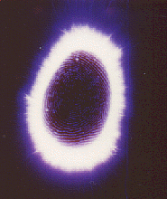
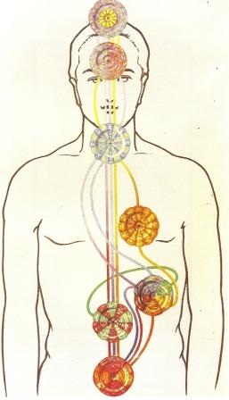

Etheric body
Composition and Structure
We shall find that the 'Etheric Double', while necessary to the life of the physical body, is not, properly speaking, a separate vehicle of consciousness: it receives and distributes the vital force which emanates from the Sun and is thus intimately connected with the physical health.

Physical matter exists in seven grades or orders of density;The Double may be separated from the dense physical body by accident, death, anaesthetics, mesmerism. The Double being the connecting link between the brain and the higher consciousness, the forcible extrusion of it from the dense physical body by anaesthetics necessarily produces anaesthesia.
Further than this, the etheric matter thus forced out usually wraps itself round the astral and dulls the consciousness of that vehicle also: hence after the effects of the anaesthetics have worn off, there is usually no memory in the brain consciousness of the time spent in the astral vehicle.
In conditions of weak health or nervous excitement, the Etheric Double may also in great part be extruded from its dense counterpart: the latter then becomes very dully conscious, or entranced, according to the lesser or greater amount of the etheric matter extruded.
Separation of the Double from the dense body is generally accompanied by a decrease of vitality in the latter, the double becoming more vitalised as the energy in the dense body diminishes.
It must also be borne in mind that etheric matter, though invisible to ordinary sight, is still purely physical, and can therefore be affected by cold and heat, and also by powerful acids.
Persons who have lost a limb sometimes complain that they can feel pain at the extremities of the amputated limb ie., at the place where the limb used to be. This is due to the fact that the etheric portion of the limb is not removed with the dense physical portion, and therefore, under suitable stimulus, sensations can be aroused in this etheric limb and transmitted to the consciousness.5
Prana or Vitality
Translated into more Western terms, yogic Prana, [Chinese Ch'i or Japanese Ki ] on the physical plane, is best described as Vitality, as the integrating energy that coordinates the physical molecules, cells etc., and holds them together as a definite organism. It is the life-breath within the organism, the portion of the universal Life-Breath, appropriated by a given organism during the period of bodily existence that we speak of as 'a life'. were it not for the presence of Prana, there could be no physical body as an integral whole, working as one entity; without Prana the body would be nothing more than a collection of independent cells. Prana links up and connects these into one complex whole, playing along the branches and meshes of the 'life-web', that shimmering golden web of inconceivable fineness and delicate beauty, formed out of a single thread of buddhic matter, a prolongation of the Sutratma, within the meshes of which the coarser atoms are built together.
Prana is absorbed by all living organisms, a sufficient supply of it seeming to be a necessity of their existence. It is not, therefore, in any sense a product of life, but the living animal, plant etc., are its products. Too great an exuberance of it in the nervous system may lead to disease and death, just as too little leads to exhaustion and untimely death.
HP Blavatsky 15 compares Prana, the active power producing all vital phenomena, to oxygen, the supporter of combustion, the life-giving gas, the active chemical agent in all organic life. A comparison is also drawn between the Etheric Double, the inert vehicle of life, and nitrogen, an inert gas with which oxygen is mixed to adapt the latter for animal respiration, and which also enters largely into all organic substances.
On the physical plane prana builds up all minerals, and is the controlling agent in the chemico-physiological changes in protoplasm, which lead to differentiation and the building of the various tissues of the bodies of plants, animals and men. They show its presence by the power of responding to stimuli.
The blending of astral with physical prana creates nerve-matter,
which is fundamentally the cell, and which gives the power to feel pleasure and
pain. The cells develop into fibres, as the result of thought, the prana
pulsating along those fibres being composed of physical, astral and mental prana.
The Secret Doctrine 16 speaks of Prana as the 'invisible' or 'fiery' lives which
supply microbes with 'vital constructive energy,' thus enabling them to build
the physical cells, the size of the smallest bacterium relatively to that of a
'fiery life' (being as that of an elephant to the tiniest infusoria
[single-celled organisms]. 'Every visible thing in this universe was built by
such lives, from conscious and divine primordial man, down to the unconscious
agents that construct matter.' 'By the manifestation of Prana, the spirit which
is speechless appears as the speaker.'
The whole of constructive vitality, in the universe and man, is thus summed up as Prana.
Nerves
It is important to note that although the nerves are in the physical body, it is not the physical body, as such, which has the power of feeling. As a sheath the physical body does not feel: it is a receiver of impressions only. The outer body receives the impact, but in its own cells does not lie the power of feeling pleasure or pain, except in a very vague, dull and 'massive' way, giving rise to vague, diffused feelings, such as those of general fatigue, for example.
The physical contacts are transmitted inwards by prana, and these are acute, sharp, keen, specific, quite different from the heavy, diffused sensations deriving from the cells themselves. It is thus in every case prana which gives the sense-activity to the physical organs, and which transmits the outer vibration to the sense-centres, which is situated in kama, in the sheath which is next to that of prana, the Manomayakosha [emotion body ??]. It is by means of the Etheric Double that prana runs along the nerves of the body and thus enables them to act not only as the carriers of external impacts but also of motor force, originated from within.
The student must carefully note that the prana which courses along the nerves is quite separate and distinct from what is called a man's magnetism, or nerve-fluid, which is generated within his own body. This nerve-fluid or magnetism keeps the etheric matter circulating along the nerves, or, more accurately, along a coating of ether which surrounds each nerve, much as the blood circulates through the veins. And just as the blood carries oxygen to the body, so does the nerve-fluid convey prana.
Furthermore, just as the particles of the dense physical body
are constantly changing and being replaced by fresh particles derived from food,
water and air, so are the particles of the etheric body being constantly changed
and replaced by fresh etheric particles, these being taken into the body along
with the food eaten, with the air breathed, and with prana, in the form known as
the Vitality Globule. [to be expanded upon].
Prana, or vitality, exists on all the planes - physical, astral, mental, etc.
Prana, the One Life, is 'the nave to which are attached the seven spokes of the
universal wheel' (Hymn to Prana, Atharva Veda, XI., 4). We are here, however,
concerned only with its appearance and methods of work in the lowest, the
physical plane.
It must also be noted that prana on the physical plane is
sevenfold ie., there are seven varieties of it.
Prana is quite separate and distinct from light, heat, etc., but nevertheless
its manifestation on the physical plan appears to depend on sunlight: for when
sunlight is abundant, prana also appears in abundance, and where sunlight is
absent, prana also is deficient.
Absorption of Vitality
The 'vitality globule', though inconceivably minute, is so brilliant that it is often seen even by those who are not in the ordinary sense clairvoyant. Many a man, looking out towards the distant horizon, especially over the sea on a sunny day, will notice against the sky a number of the tiniest possible points dashing about in all directions with amazing rapidity. These are vitality globules, each consisting of seven physical atoms - the Fiery Lives, specks charged with that force [called] Prana. The best way to see them is to face directly away from the sun and focus the eyes a few feet away with a clear sky as background. Brilliant as the globule is, it is almost colourless, and may be compared to white or a slightly golden light.
It has been remarked that although the force which vivifies these globules is quite different from light, it nevertheless appears to depend upon light for its power of manifestation. In brilliant sunshine this vitality is constantly welling-up afresh, and the globules are generated in incredible numbers; but in cloudy weather there is a great diminution in the number of globules formed, and during the night the operation appears to be entirely suspended. During the night therefore, we may be said to be living on the stock manufactured during the previous day, and although it appears practically impossible that it should ever be entirely exhausted, that stock evidently does run low when there is a long succession of cloudy days.
But as soon as it is drawn into the vortex of the force-centre at the spleen it is decomposed and breaks up into streams of different colours, though it does not follow exactly our division of the spectrum. As its component atoms are whirled around the vortex, each of the six spokes seizes upon one of them, so that all the atoms charged with yellow flow along one, and all those charged with green along another, and so on, whilst the seventh disappears through the centre of the vortex - through the hub of the wheel, as it were.

These rays then pass off in different directions, each to do its special work in the vitalization of the body.The colours of the divisions of prana are not exactly those which we ordinarily use in the solar spectrum, but rather resemble the arrangement of colours which we see on higher levels in the causal, mental and astral bodies.
Vitality is thus sevenfold, but it flows through the body in five main streams, for after issuing from the splenic [sacral] centre the blue and violet join into one ray, and so do the orange and the dark red.
The violet-blue ray flashes upwards to the throat, where it seems to divide itself, the light blue remaining to course through and quicken the throat centre, while the dark blue and violet pass on into the brain. The dark blue expends itself in the lower and central parts of the brain, while the violet floods the upper part, and appears to give special vigour to the force centre at the top of the head, diffusing itself chiefly through the 960 petals of the outer part of that centre.
The yellow ray is directed to the heart, but after doing its work there part of it also passes on to the brain and permeates it, directing itself principally to the twelve-petalled flower in the midst of the highest force centre.
The green ray floods the abdomen, and while centring especially in the solar plexus, evidently vivifies the liver, kidneys and intestines, and the digestive apparatus generally.
The rose-coloured ray runs all over the body along the nerves, and is clearly the life of the nervous system. This is the specialized vitality which one man may readily pour into another in whom it is deficient. If the nerves are not fully supplied with this rosy light they become sensitive and intensely irritable, so that the patient finds it almost impossible to remain in one position, and yet gains but little ease when he moves to another. The least noise or touch is agony to him, and he is in a condition of acute misery. The flooding of his nerves with specialized prana by some healthy person brings instant relief, and a feeling of healing and peace descends upon him. A man in robust health usually absorbs and specializes so much more of this vitality than is actually needed by his own body that he is constantly radiating a torrent of rose-coloured atoms, and so unconsciously pours strength upon his weaker fellows without losing anything himself; or by an effort of his will he can gather together this superfluous energy and aim it intentionally at one whom he wishes to help.